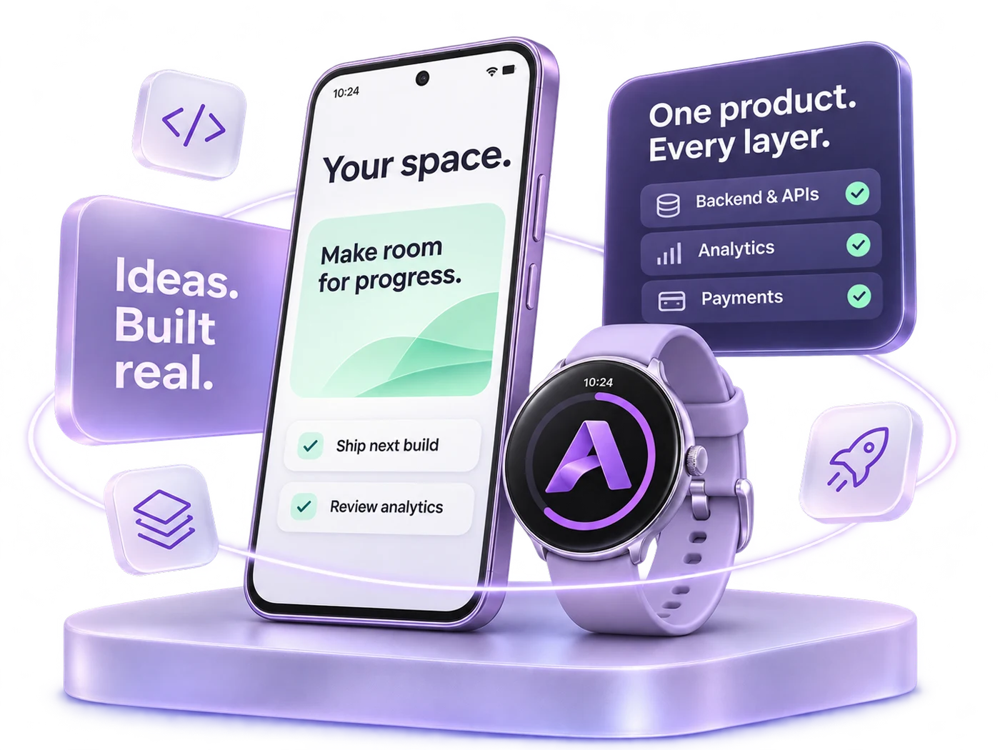
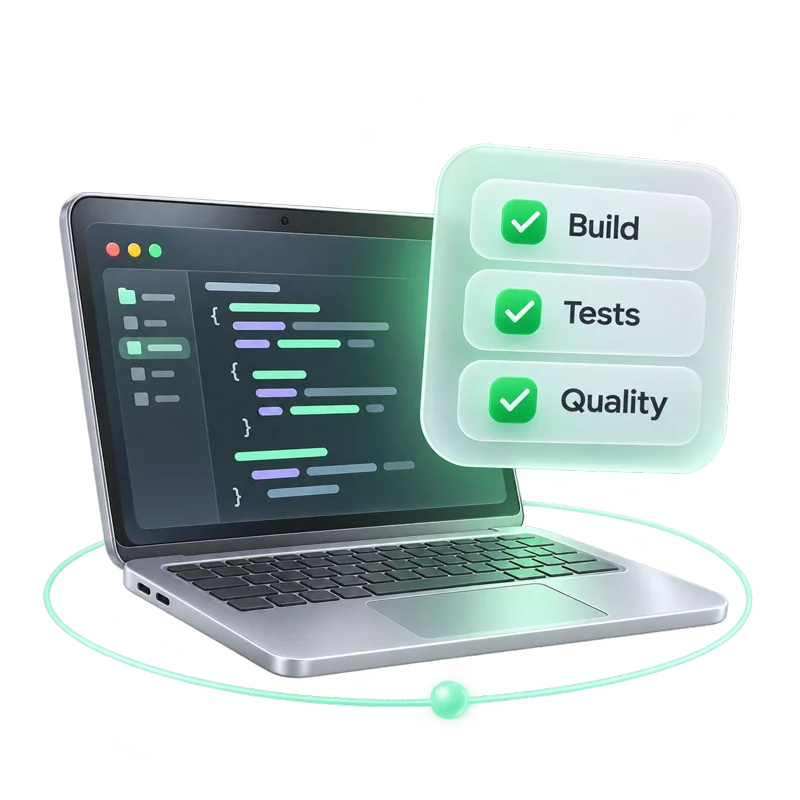
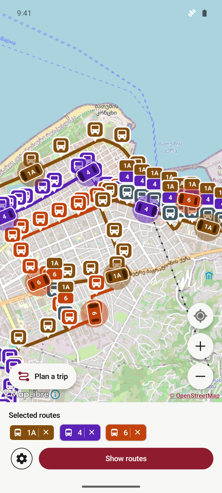
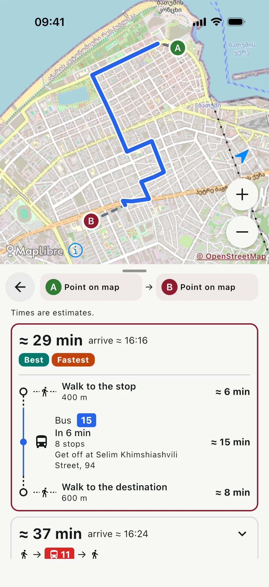

Разработка приложений для Android и iOS
Нативные мобильные приложения для Android, iPhone и Wear OS. Использую Kotlin Multiplatform там, где есть смысл переиспользовать код.

Разрабатываю мобильные приложения для Android и iOS, Telegram-ботов и сайты. Беру на себя серверную часть, интеграции и запуск.

Могу разработать продукт с нуля или подключиться к существующему проекту.
Нативные мобильные приложения для Android, iPhone и Wear OS. Использую Kotlin Multiplatform там, где есть смысл переиспользовать код.
Делаю лендинги, веб-приложения и Telegram-ботов на заказ. При необходимости разрабатываю серверную часть и подключаю API.
Всё необходимое для релиза, чтобы работающее приложение стало полноценным продуктом.
Архитектура с запасом на рост. Понятный код. Продуманное обновление существующих систем.



Общественный транспорт Батуми, Кутаиси и Зугдиди. Автобусы на карте в реальном времени, время прибытия на остановку и планирование поездок.
Открыть сайт Geo TransitПрактический подход, который объединяет скорость ИИ-агентов с инженерным опытом, архитектурой и контролем качества.
Определяю задачу, ограничения и ожидаемый результат.
Агенты решают задачи с нужным контекстом, инструментами и правилами проекта.
Проверяю результат, дизайн, архитектуру и код. Тестирую поведение.
Интегрирую, проверяю и выпускаю продукт.
Практический опыт
Инструменты в моей работеCodex, Claude Code, Cursor,
Gemini & Copilot
От аутсорсинга до корпоративных продуктов: B2B, B2C и внутренние приложения. Опыт работы разработчиком и техническим руководителем.
Создадим ваш следующий продукт
Давайте воплотим её в жизнь.